시작하기
처음 열면 목표 자격과 시험일부터 정하세요. 그러면 대시보드가 남은 기간에 맞춘 오늘의 학습 계획을 보여 줍니다.
화면 구성
PC에서는 왼쪽 메뉴, 휴대폰에서는 아래 탭바로 이동합니다. 메뉴 구성은 같습니다.
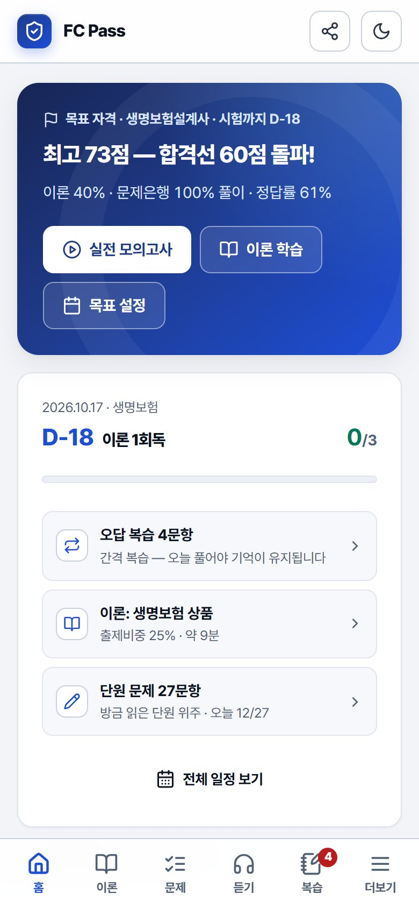
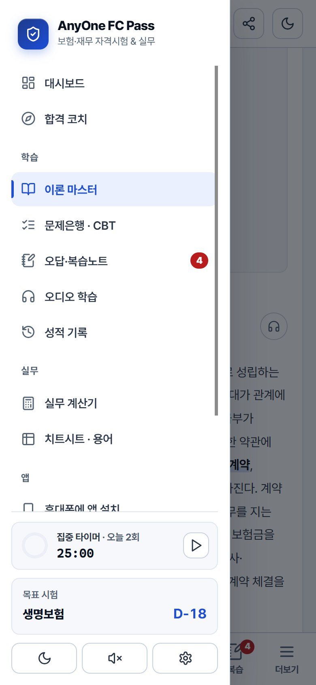
- 1공유 — 앱 링크를 카카오톡 등으로 보냅니다
- 2오늘의 학습 — 시험일까지 남은 날과 오늘 할 일
- 3하단 탭바 — 홈 · 이론 · 문제 · 듣기 · 복습
- 4복습 배지 — 오늘 다시 풀 오답 수
- 5더보기 — 전체 메뉴 열기
- 1합격 코치 — 합격 가능성과 일정
- 2앱 메뉴 — 설치 · 카톡 공유 · 설명서 (아래로 밀어서 확인)
- 3집중 타이머 — 25분 집중 · 5분 휴식
- 4목표 시험 — 누르면 자격·시험일 변경
첫 설정: 목표 자격과 시험일
- 대시보드의 목표 설정 버튼(또는 왼쪽 아래 목표 시험 카드)을 누릅니다.
- 도전할 자격증과 시험일을 고르고, 하루 학습 목표(문항 수)를 정합니다.
- 저장을 누르면 합격 코치가 시험일까지의 일정을 자동으로 만듭니다.
대시보드 · 합격 코치
지금 실력으로 합격할 수 있는지, 오늘 무엇을 하면 되는지를 한 화면에서 보여 줍니다.
대시보드
- 1목표 자격 · D-day — 시험까지 남은 날
- 2실전 모의고사 — 바로 응시
- 3오늘의 학습 — 현재 단계와 완료한 할 일 수
- 4오늘 할 일 — 누르면 해당 학습으로 이동, 끝내면 자동 체크
- 5합격 가능성 — 지금 실력으로 본 합격 확률
- 6점수를 가장 많이 올리는 단원 — 누르면 그 단원 연습
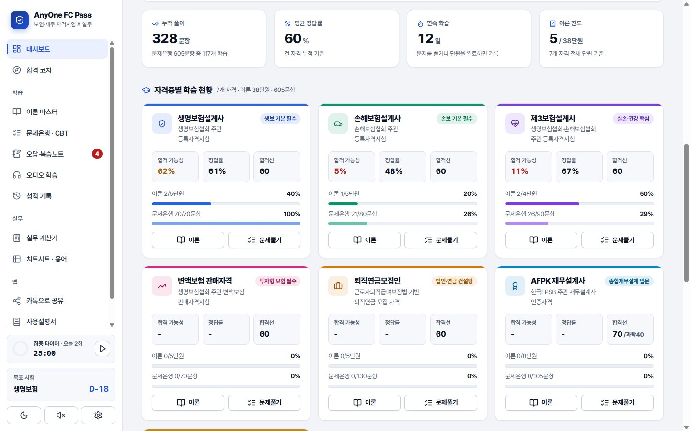
- 1학습 요약 — 누적 풀이 · 평균 정답률 · 연속 학습일 · 이론 진도
- 2자격증 카드 — 자격별 이론·문제 진도
- 3합격 가능성 · 정답률 · 합격선 (AFPK·CFP는 과락 기준 표시)
- 4이론 / 문제풀기 — 해당 자격으로 바로 이동
합격 코치
왼쪽 메뉴 합격 코치에서 자세한 분석과 일정을 봅니다.
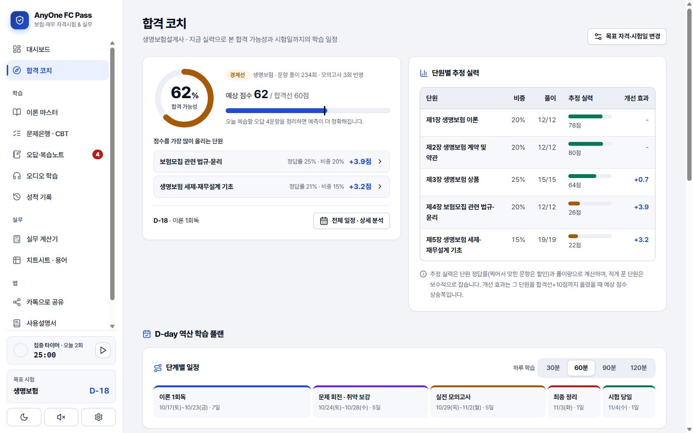
- 1합격 가능성 — 안정권(85%↑) · 합격권(65%↑) · 경계선(40%↑) · 준비 필요
- 2예상 점수 — 세로선이 합격선
- 3개선 우선순위 — 올리면 예상 점수가 가장 많이 오르는 단원
- 4전체 일정 · 상세 분석
- 5단원별 추정 실력 — 적게 푼 단원은 '추정'으로 보수적 계산
- 6개선 효과 — 그 단원을 합격선+10점까지 올렸을 때 오르는 점수
D-day 학습 플랜
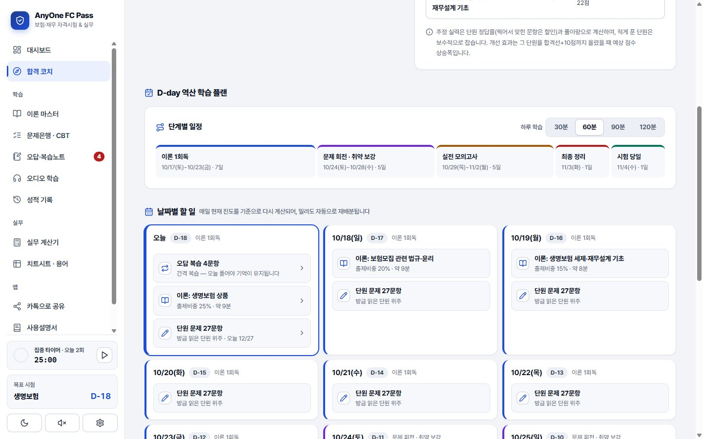
- 1단계 — 이론 1회독 → 문제 회전 → 실전 모의고사 → 최종 정리 → 시험일
- 2하루 학습 시간 — 30·60·90·120분에 맞춰 분량 조절
- 3오늘 — 오늘 할 일 목록
- 4할 일 — 누르면 바로 시작, 끝내면 자동 체크
- 5다음 날 일정
이론 마스터
7개 자격 38단원 · 255개 섹션. 본문 → 핵심 암기 → 함정 → 실무 팁 → 이해도 체크 순서로 읽으면 됩니다.
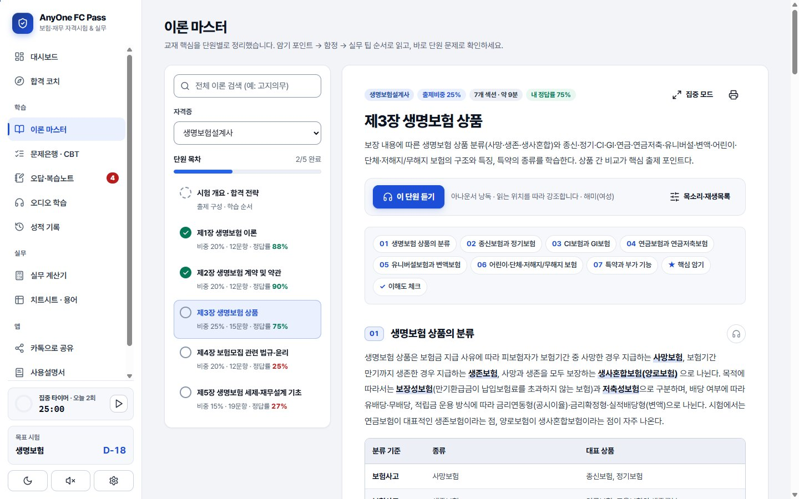
- 1전체 이론 검색 — 7개 자격의 모든 단원에서 찾기
- 2단원 목차 — 완료 체크와 내 정답률 표시
- 3출제비중 · 섹션 수 · 읽는 시간
- 4이 단원 듣기 — 아나운서 낭독 (7장)
- 5섹션 바로가기
- 6이 섹션부터 듣기
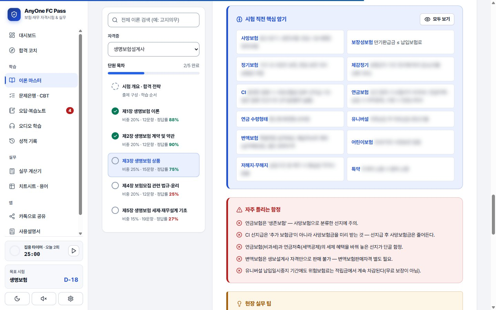
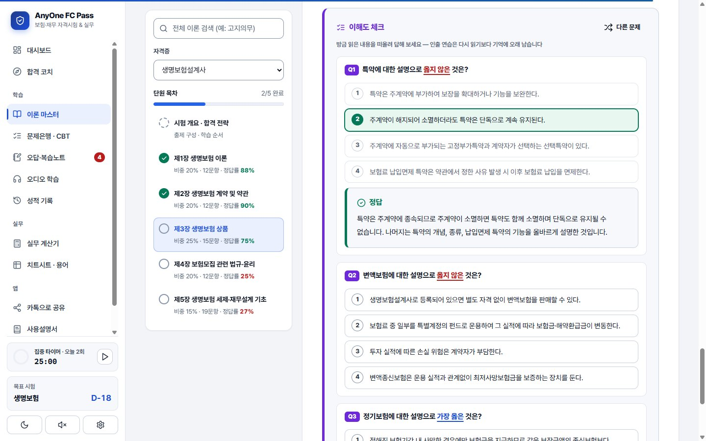
- 1가리고 외우기 — 설명을 흐리게 가립니다
- 2암기 카드 — 떠올린 뒤 눌러서 확인
- 3확인한 카드
- 4자주 틀리는 함정 — 시험에서 헷갈리는 포인트
- 1이해도 체크 — 방금 읽은 내용으로 3문항
- 2정답 · 오답 표시
- 3해설 — 틀리면 복습노트에 자동 등록
- 4다른 문제 — 새 3문항으로 교체
문제은행 · CBT
605문항(변형 계산문제 140문항 포함). 실제 시험장과 같은 CBT 모의고사와, 한 문제씩 바로 채점하는 연습 모드가 있습니다.
학습 모드 고르기
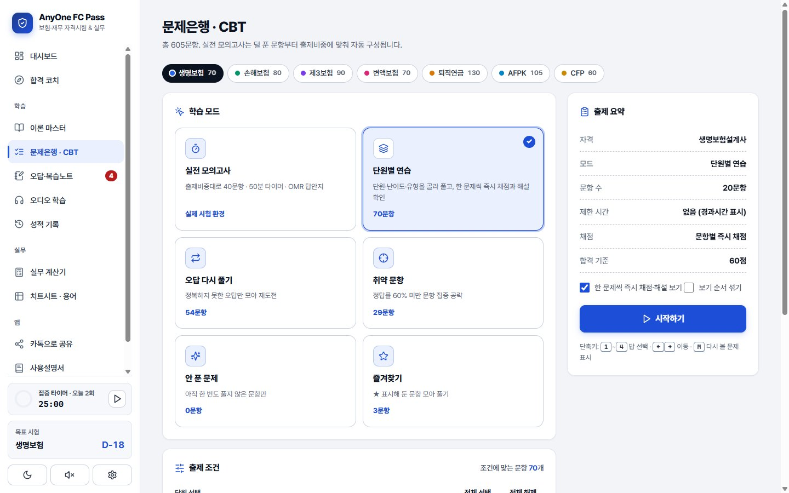
- 1자격증 선택 — 숫자는 보유 문항 수
- 2단원별 연습 — 문항별 즉시 채점
- 3그 밖의 모드 — 오답 다시 풀기 · 취약 문항 · 안 푼 문제 · 즐겨찾기
- 4출제 요약 — 문항 수 · 시간 · 채점 방식
- 5옵션 — 즉시 채점 / 보기 순서 섞기
- 6시작하기
| 모드 | 이럴 때 |
|---|---|
| 실전 모의고사 | 출제비중대로 실제 문항 수·시간으로 출제. 덜 푼 문항부터 나옵니다. |
| 단원별 연습 | 단원·난이도·유형·문항 수를 골라 한 문제씩 채점과 해설 확인 |
| 오답 다시 풀기 | 아직 정복하지 못한 오답만 모아 재도전 |
| 취약 문항 | 정답률 60% 미만 문항 집중 공략 |
| 안 푼 문제 · 즐겨찾기 | 처음 보는 문항만, 또는 ★ 표시한 문항만 |
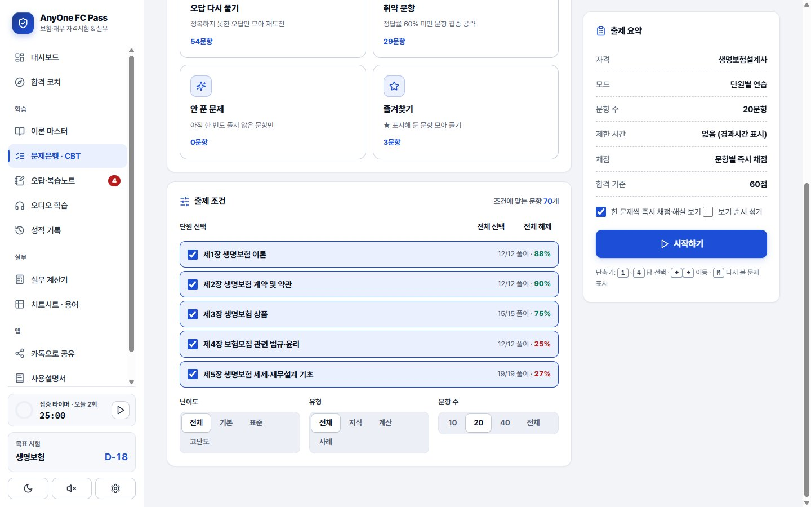
- 1단원 선택 — 풀이 진도와 정답률 표시
- 2난이도 — 기본 · 표준 · 고난도
- 3유형 — 지식 · 계산 · 사례
- 4문항 수 — 10 · 20 · 40 · 전체
시험 화면
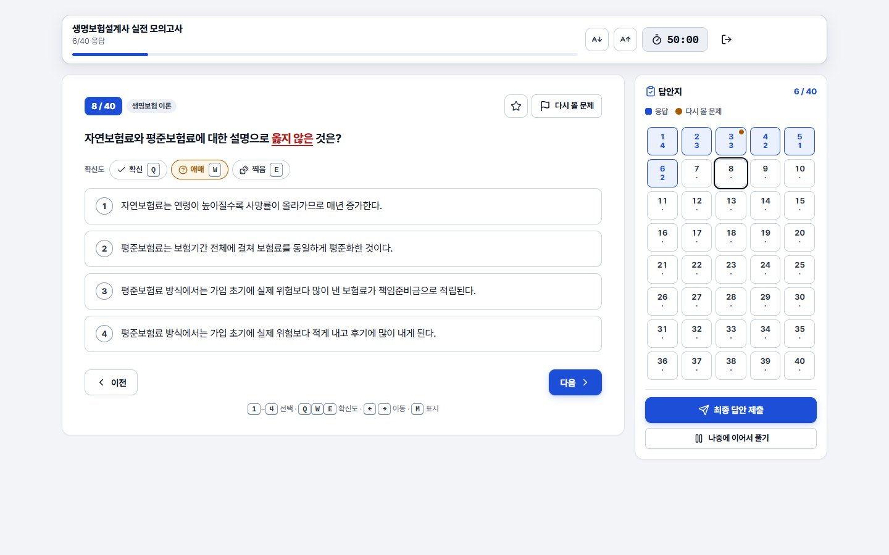
- 1남은 시간 — 10분·3분 전 색으로 경고, 끝나면 자동 제출
- 2부정형 강조 — '옳지 않은 것'에 빨간 밑줄
- 3확신도 — 확신 · 애매 · 찍음
- 4보기 — 누르거나 숫자키 1~4
- 5다시 볼 문제 표시
- 6OMR 답안지 — 번호를 눌러 이동, 주황 점은 표시한 문제
- 7최종 답안 제출 — 미응답·표시 문제를 알려 준 뒤 채점
- 8글자 크기 조절
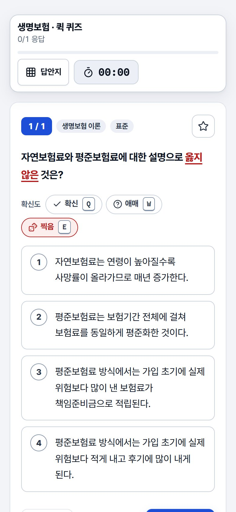
- 1부정형 강조
- 2확신도 — 보기를 고르기 전에 선택
- 3보기 — 손가락으로 누르기
- 4답안지 — 아래에서 올라오는 OMR
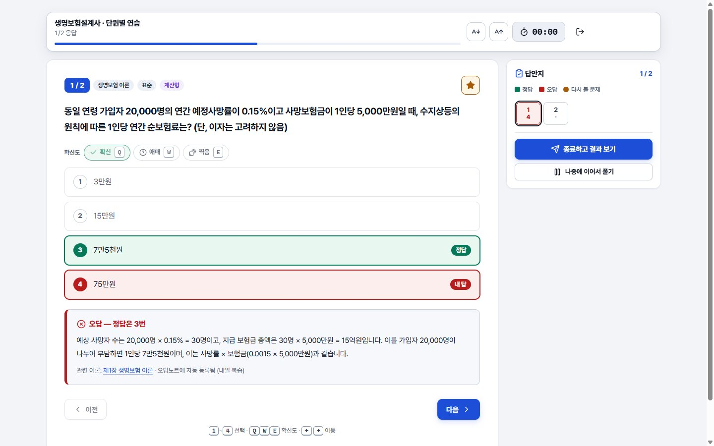
- 1내가 고른 답 (오답)
- 2정답
- 3해설 — 오답 선지가 왜 틀렸는지까지
- 4관련 이론 바로가기 · 오답노트 자동 등록
결과 분석
제출하면 바로 채점하고, 어디서 점수를 잃었는지와 다음에 할 일을 알려 줍니다.
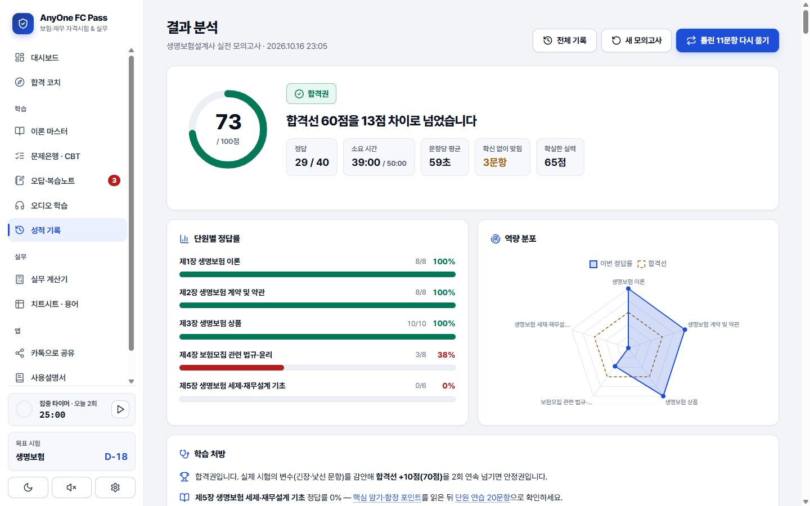
- 1점수
- 2합격권 / 불합격 판정 (과락 포함)
- 3확신 없이 맞힘과 그것을 뺀 '확실한 실력' 점수
- 4단원별 정답률 — AFPK·CFP는 과락선 표시
- 5역량 분포 — 합격선과 비교
- 6틀린 문항 다시 풀기
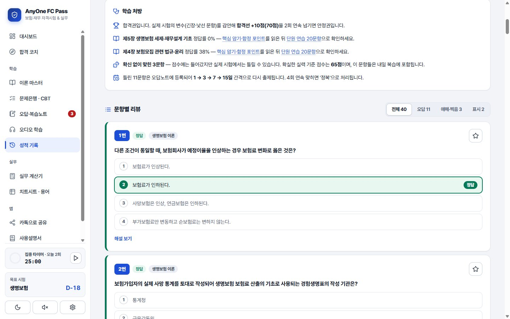
- 1학습 처방 — 취약 단원 · 과락 · 시간 배분 · 복습 일정
- 2리뷰 필터 — 전체 · 오답 · 애매·찍음 · 표시
- 3문항별 리뷰 — 내 답 · 정답 · 해설
오답 · 복습노트
틀린 문항(그리고 확신 없이 맞힌 문항)은 자동으로 모입니다. 잊어버릴 때쯤 다시 내 주는 간격 복습으로 오래 기억하게 합니다.
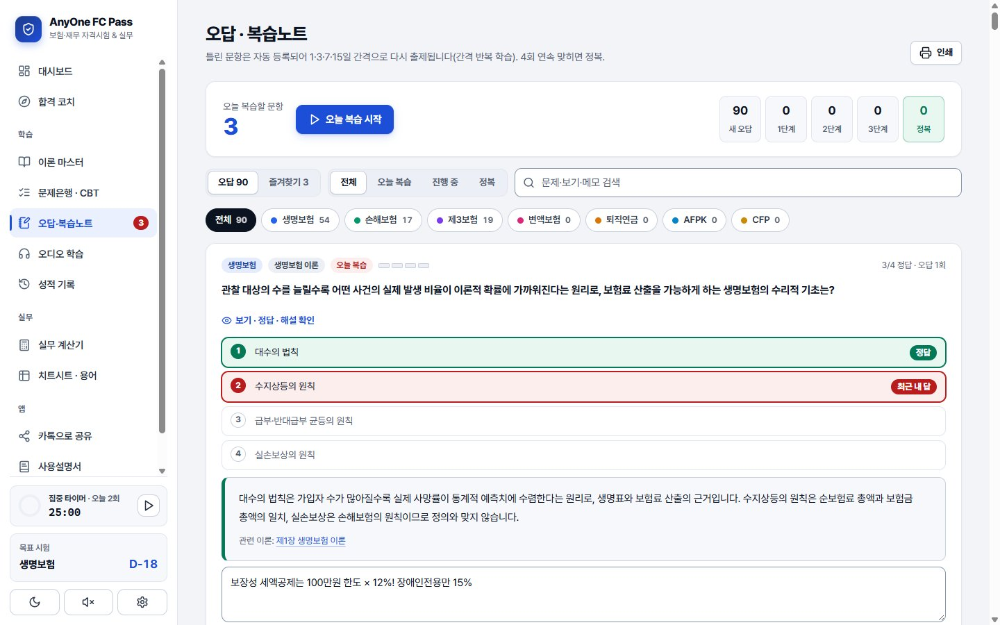
- 1오늘 복습할 문항 수
- 2오늘 복습 시작 — 오늘 차례인 문항만 연속 출제
- 3복습 단계 분포 — 새 오답 · 1~3단계 · 정복
- 4오답 / 즐겨찾기 탭과 상태 필터
- 5복습 단계 막대 — 4칸이 차면 정복
- 6나만의 암기 메모 — 자동 저장
| 상황 | 다음 출제 |
|---|---|
| 틀렸을 때 | 다음 날 (1단계부터 다시) |
| 복습 날 맞히면 | 3일 뒤 → 7일 뒤 → 15일 뒤 |
| 4회 연속 맞히면 | 정복 (목록에서 흐리게 표시) |
| 애매·찍어서 맞히면 | 다음 날 다시 확인 |
오디오 학습
출퇴근길·운전 중에도 이론을 아나운서 목소리로 듣습니다. 이어폰 버튼과 잠금화면으로 재생·건너뛰기를 조작할 수 있습니다.
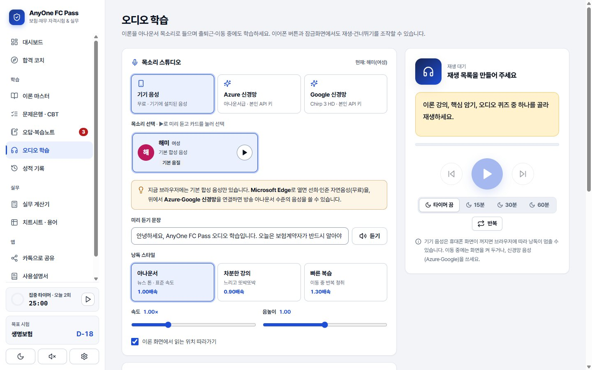
- 1기기 음성 — 무료 (Edge에서는 선희·인준 자연음성)
- 2Azure · Google 신경망 — 방송 아나운서 품질 (본인 API 키)
- 3목소리 카드 — 누르면 선택
- 4미리 듣기
- 5지금 재생 중 — 현재 섹션과 자막
- 6재생 · 이전/다음 섹션, 취침 타이머, 반복
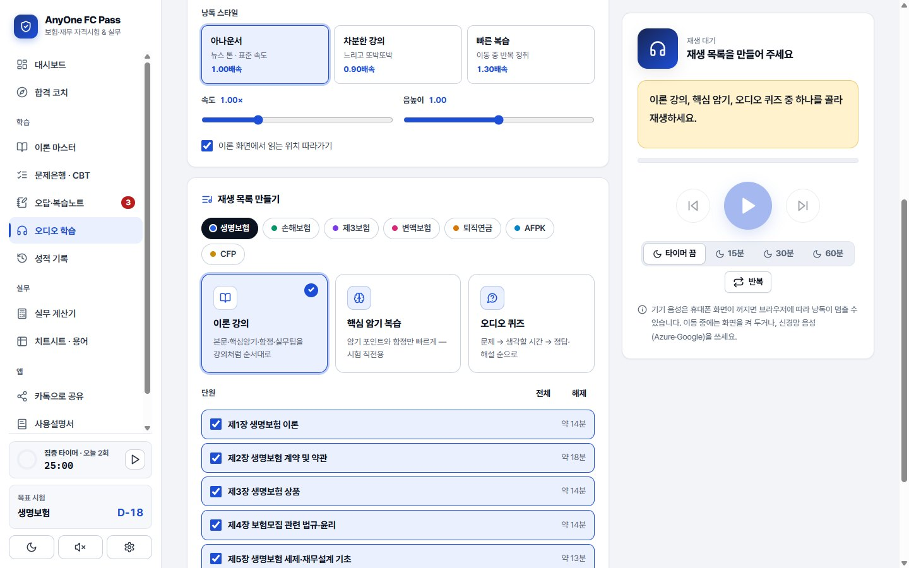
- 1낭독 스타일 — 아나운서 · 차분한 강의 · 빠른 복습
- 2속도 · 음높이
- 3재생 목록 종류 — 이론 강의 · 핵심 암기 복습 · 오디오 퀴즈
- 4단원 선택 — 예상 재생 시간 표시
이론 화면에서 바로 듣기
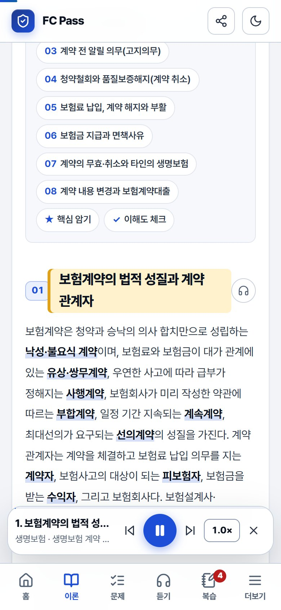
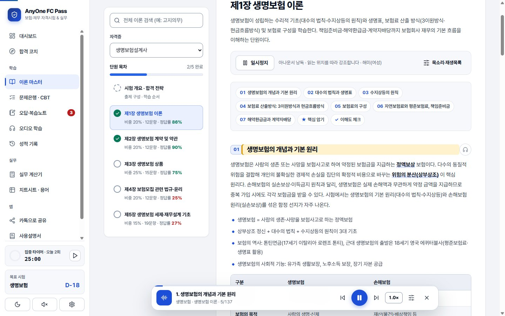
- 1지금 읽는 문단 — 노란색 강조, 화면이 따라 이동
- 2미니 플레이어 — 누르면 본문으로 이동
- 3재생 / 일시정지
- 4속도 — 누를 때마다 0.9 ~ 1.75배
성적 기록
응시한 모의고사와 연습의 점수 추이를 봅니다. 항목을 누르면 그때의 문항별 리뷰를 다시 열 수 있습니다.
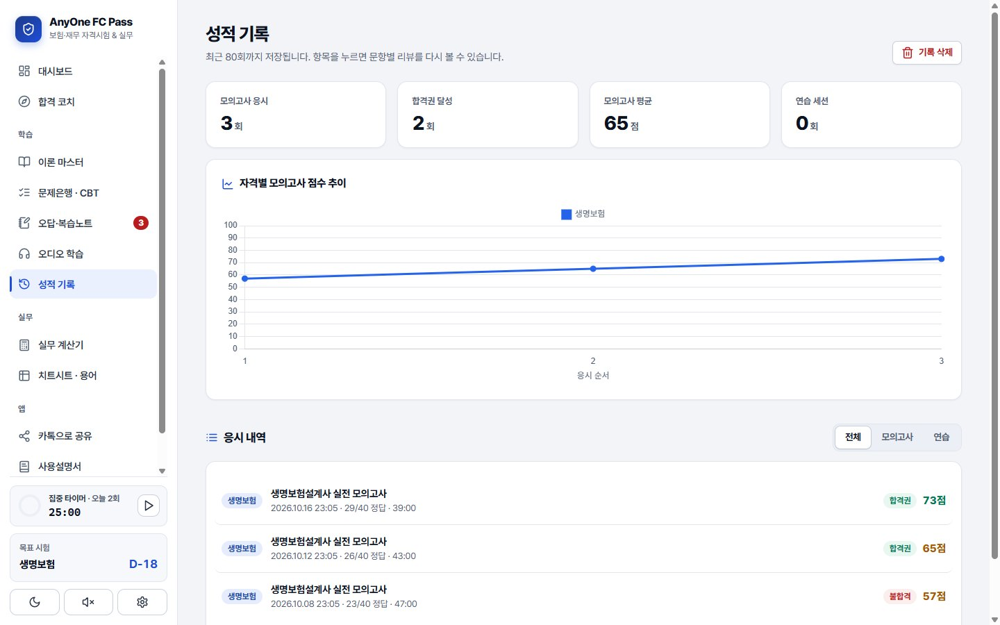
- 1요약 — 응시 횟수 · 합격권 달성 · 평균
- 2점수 추이 — 자격별 색 구분
- 3응시 내역 — 누르면 결과 분석으로 이동
실무 계산기
고객 상담에서 바로 쓰는 계산기 11종. 숫자를 바꾸는 즉시 결과와 계산 과정이 나옵니다.
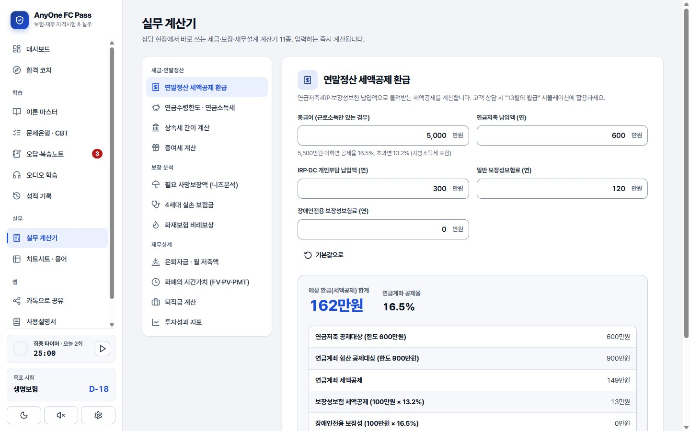
- 1계산기 목록 — 세금 · 보장 분석 · 재무설계
- 2입력 칸 — 금액은 만원(또는 원) 단위
- 3결과
- 4계산 과정 · 상담 팁
치트시트 · 용어사전
시험에 자주 나오는 수치·비교표 20종과 금융·보험 용어 182개를 검색해 봅니다.
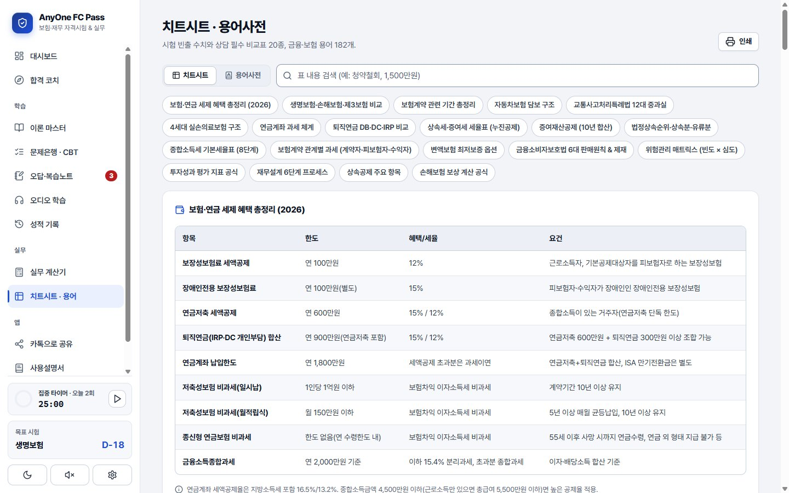
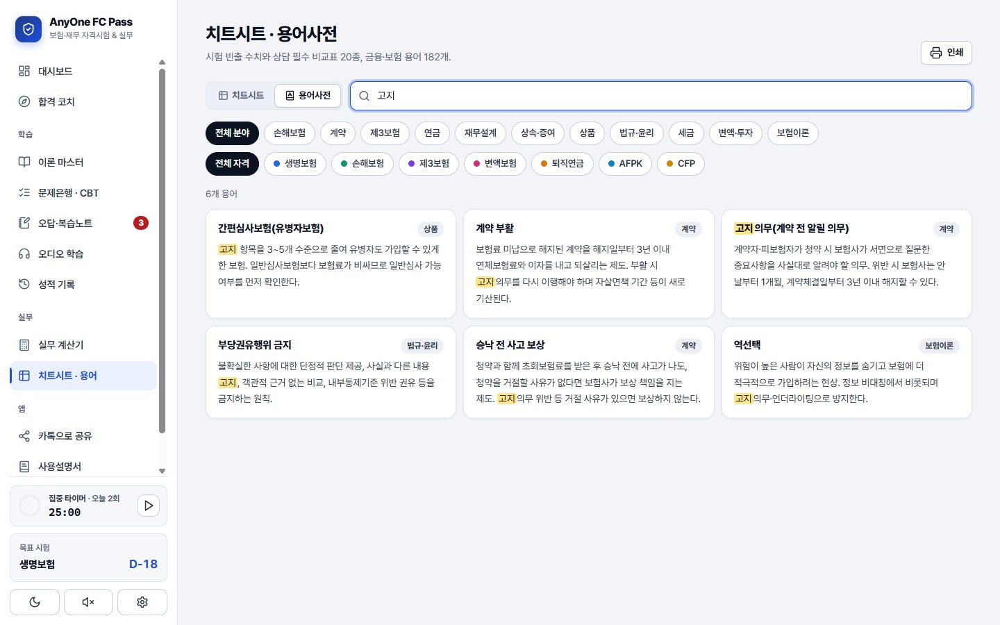
- 1치트시트 / 용어사전 전환
- 2검색 — 표 내용까지 찾기
- 3표 바로가기
- 4비교표 — 인쇄 가능
- 1검색
- 2분야 · 자격별 필터
- 3검색어 강조
설정 · 데이터 백업 · 집중 모드
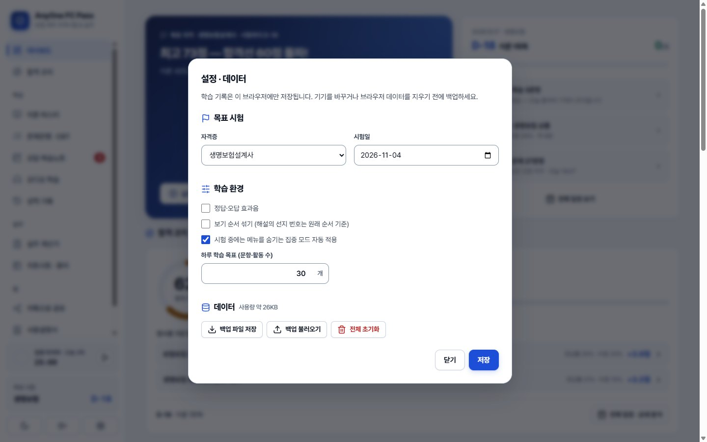
- 1목표 자격
- 2시험일
- 3시험 중 집중 모드 자동 적용
- 4하루 학습 목표
- 5백업 파일 저장 · 불러오기 · 초기화
- 6저장
기기를 바꾸거나 PC ↔ 휴대폰으로 옮길 때
- 쓰던 기기에서 ⚙ 설정 → 백업 파일 저장을 누르면 anyone-fc-pass-backup-날짜.json 파일이 내려받아집니다.
- 파일을 새 기기로 옮깁니다 (카카오톡 '나에게 보내기', 메일, 클라우드 등).
- 새 기기에서 ⚙ 설정 → 백업 불러오기로 파일을 고르면 풀이 기록·오답노트·성적이 그대로 복원됩니다.
집중 모드 · 집중 타이머
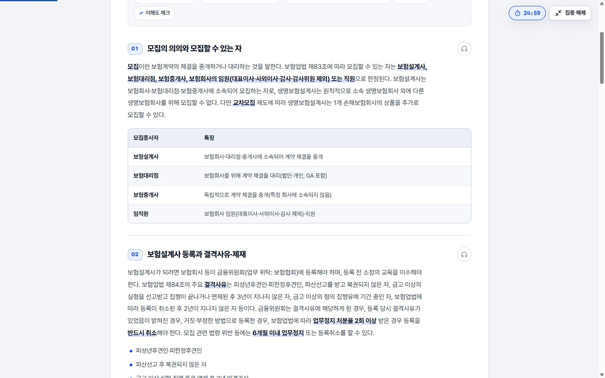
- 1집중 타이머 — 25분 집중 후 5분 휴식 알림
- 2집중 해제 (단축키 F)
- 3본문 — 읽기 편한 폭으로 가운데 정렬, 맨 위 진행 막대
단축키 · 자주 묻는 질문
| 키 | 동작 | 화면 |
|---|---|---|
| 1~4 | 보기 선택 | 문제 풀이 |
| Q W E | 확신도: 확신 · 애매 · 찍음 | 문제 풀이 |
| ← → / Enter | 이전 · 다음 문제 | 문제 풀이 |
| M | 다시 볼 문제 표시 | 모의고사 |
| F | 집중 모드 켜기/끄기 | 모든 화면 |
| Space | 재생 / 일시정지 | 오디오 학습 |
| Esc | 창 · 메뉴 닫기 | 모든 화면 |
시험 도중 앱을 닫으면 어떻게 되나요?
인터넷이 없어도 되나요?
합격 가능성이 '데이터 수집 중'으로만 나와요.
소리가 나지 않아요.
학습 기록을 지우고 처음부터 하고 싶어요.
문항이나 해설이 틀린 것 같아요.
AnyOne FC Pass 3.1 · 사용설명서 · 설치 매뉴얼